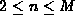
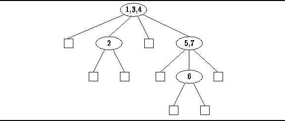

Data Structures and Algorithms
with Object-Oriented Design Patterns in Java
Data Structures and Algorithms
with Object-Oriented Design Patterns in Java
Definition (M-way Search Tree) An M-way search tree T is a finite set of keys. Either the set is empty,; or the set consists of n M-way subtrees
,
, ...,
, and n-1 keys,
,
, ...,
,
where , such that the keys and nodes satisfy the following data ordering properties :
Figure  gives an example of an M-way search tree for M=4.
In this case,
each of the non-empty nodes of the tree has between one and three keys
and at most four subtrees.
All the keys in the tree satisfy the data ordering properties.
Specifically, the keys in each node are ordered
and for each key in the tree,
all the keys in the left subtree with respect to the given key are
are less than the given key,
and all the keys in the right subtree with respect to the given key
are larger than than the given key.
Finally, it is important to note that the topology of the tree
is not determined by the particular set of keys it contains.
gives an example of an M-way search tree for M=4.
In this case,
each of the non-empty nodes of the tree has between one and three keys
and at most four subtrees.
All the keys in the tree satisfy the data ordering properties.
Specifically, the keys in each node are ordered
and for each key in the tree,
all the keys in the left subtree with respect to the given key are
are less than the given key,
and all the keys in the right subtree with respect to the given key
are larger than than the given key.
Finally, it is important to note that the topology of the tree
is not determined by the particular set of keys it contains.

Figure: An M-way search tree.
 Copyright © 1998 by Bruno R. Preiss, P.Eng. All rights reserved.
Copyright © 1998 by Bruno R. Preiss, P.Eng. All rights reserved.